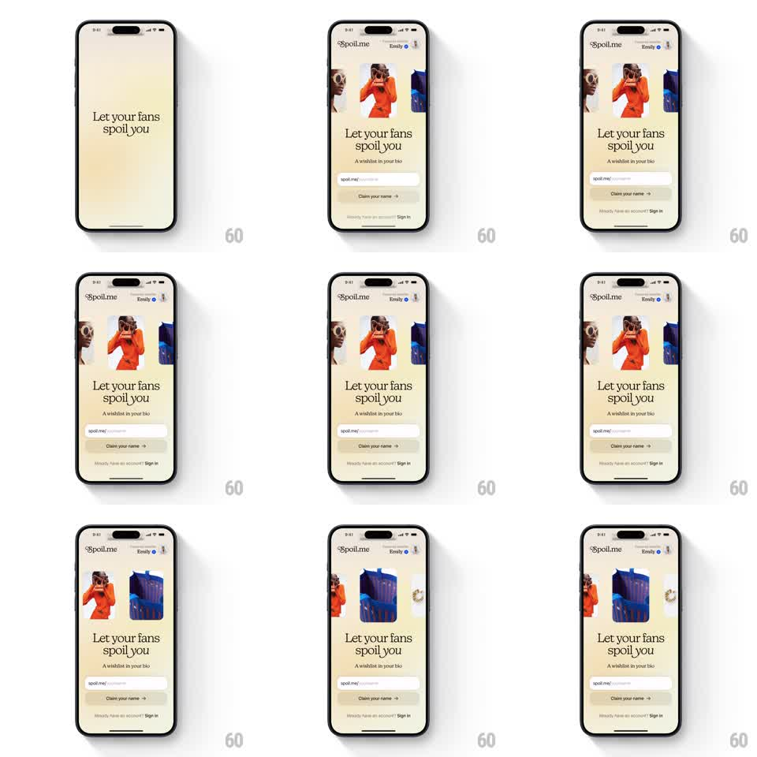

Media
Frame-by-frame

Rebuild this animation 1:1: Spoil Me's splash - a cream screen where a horizontal carousel of lifestyle photo cards auto-scrolls continuously above the serif headline "Let your fans spoil you".

Rebuild this animation 1:1: Spoil Me's splash - a cream screen where a horizontal carousel of lifestyle photo cards auto-scrolls continuously above the serif headline "Let your fans spoil you".
## Integration
Integration: stack-agnostic spec - springs given as stiffness/damping, timed motions as duration + curve; map every value to your framework and animation library of choice.
## Scene
Warm cream screen. Top: the Spoil.me wordmark and a small profile chip ("Emily"). Upper third: a horizontal strip of rounded lifestyle photo cards (fashion, objects). Center: serif headline "Let your fans spoil you" with the subline "A wishlist in your bio". Bottom: a "spoil.me/username" claim field, a "Claim your name" button, and a "Sign in" link.
## Motion spec
Pattern: infinite auto-scrolling card marquee.
- The card strip scrolls left continuously at a slow, constant speed (~40px/s, linear) with no easing, wrapping seamlessly - cards leaving the left edge re-enter on the right.
- Cards bob almost imperceptibly (alternate cards translateY +-2px, 3s sine) so the strip feels alive, not mechanical.
- On load, the strip fades in first (400ms), then headline rises (translateY 12px, 350ms), then the claim field and button (250ms, 100ms stagger).
- The marquee never stops, pauses, or reacts to the rest of the screen.
- Touching the strip lets the user drag it; on release it resumes its drift within 500ms.
## Calibration
- Marquee speed stays slow enough to read each photo; fast marquees feel like ads.
- The wrap must be pixel-seamless - a visible jump at the loop point breaks the spell.
## Reduced motion
Static card strip; no marquee or bob.
## Don't miss
- Cards crop at both screen edges - the strip reads as a window onto a longer reel.
- Serif headline with the playful "spoil" underline flourish; sans-serif kills the brand.